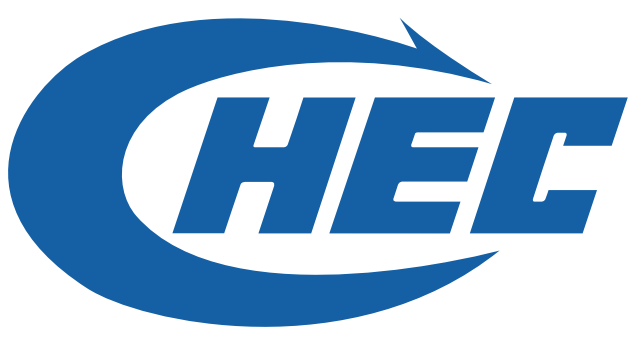

“西工”基于项目知识库与工程规范，为专项施工方案提供条文对比、风险识别与优化建议，提升技术审核的效率、规范性和可追溯性。
请上传待审核的专项施工方案。系统将按已配置的工作流完成文件解析、规范检索与审核输出。
检索已纳入知识库的规范标准，输出可追溯的来源文件与对应条文依据。
适配 Word、文字型 PDF 和图片型 PDF，支持长文档分段解析与汇总。
在满足知识库要求后，结合专业经验提出潜在关注项与优化建议。